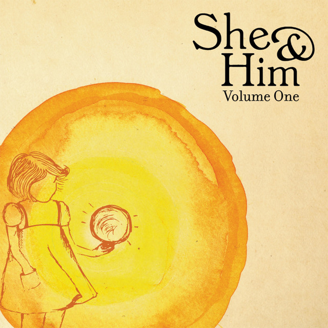

I Thought I Saw Your Face Today
SHE & HIM
0:002:50
🔉
HTML made by SrYor
I thought I saw your face todayPensé que vi tu rostro hoy
But I just turned my head awayPero solo volteé la cabeza
Your face against the treesTu rostro contra los árboles
But I just see the memoriesPero solo veo los recuerdos
As they comeComo vienen
As they comeComo vienen
🎶
And I couldn't help but fall in love againY no pude evitar enamorarme de nuevo
No, I couldn't help but fall in love againNo, no pude evitar enamorarme otra vez
🎶🎵
I saw it glitter as I grewLo vi brillar mientras crecía
And loved it why I never knewY por qué lo amaba, nunca supe
I thought this place was heaven sentPensé que este lugar era un paraíso enviado
But now it's just a monumentPero ahora es solo un monumento
In my mindEn mi mente
In my mindEn mi mente
🎶
And I couldn't help but fall in love againY no pude evitar enamorarme otra vez
No, I couldn't help but fall in love againNo, no pude evitar enamorarme de nuevo
🎶🎵
The cars and freewaysLos coches y las autopistas
Implore me to stay away out of this placeMe imploran que me mantenga alejada de este lugar
My mother said just keep your headMi madre dijo: Solo mantén la cabeza fría
And play it as it laysY acéptalo como venga
🎶
The cars and freewaysLos coches y las autopistas
Implore me to stay away out of this placeMe imploran que me mantenga alejada de este lugar
My mother said just keep your headMi madre dijo: Solo mantén la cabeza fría
And play it as it laysY acéptalo como venga
🎶🎵
I somehow see what's beautifulDe alguna manera veo lo que es hermoso
In things that are ephemeralEn las cosas que son efímeras
I'm my only friend, am I?Soy mi único amigo, ¿verdad?
Love is just a piece of timeEl amor es solo un trocito de tiempo
In the worldEn el mundo
In the worldEn el mundo
🎶
And I couldn't help but fall in love againY no pude evitar enamorarme otra vez
No, I couldn't help but fall in love againNo, no pude evitar enamorarme de nuevo
No, I couldn't help but fall in love againNo, no pude evitar enamorarme de nuevo
No, I couldn't help but fall in love againNo, no pude evitar enamorarme de nuevo
No, I couldn't help but fall in love againNo, no pude evitar enamorarme de nuevo
No, I couldn't help but fall in love againNo, no pude evitar enamorarme de nuevo